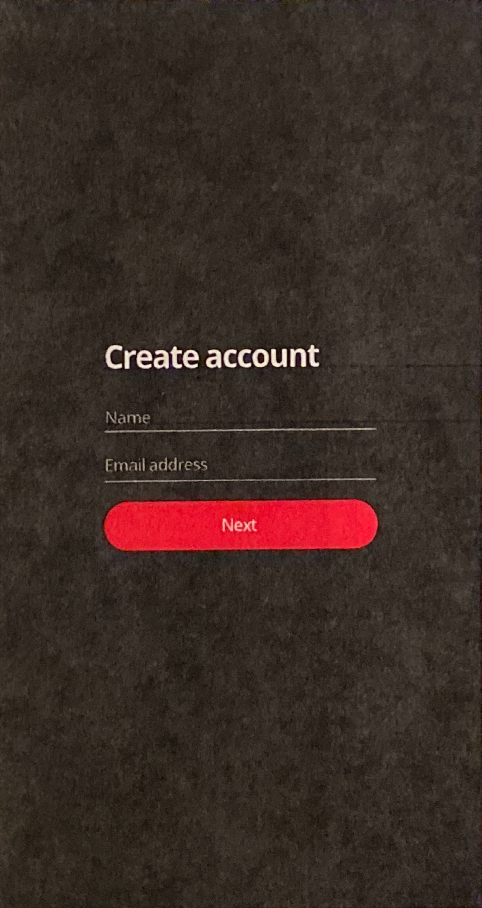
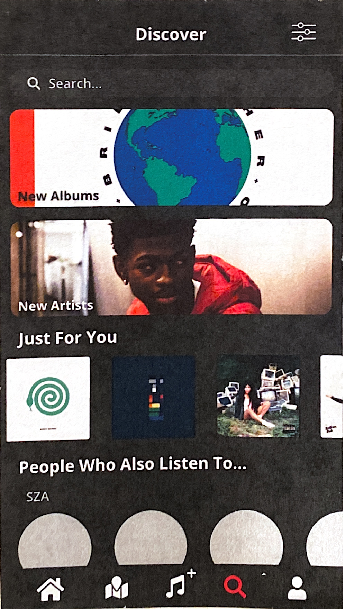
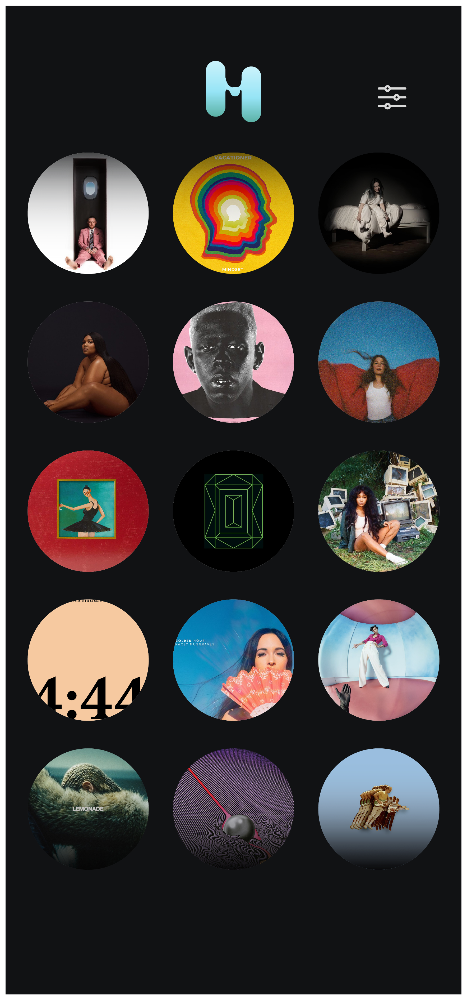
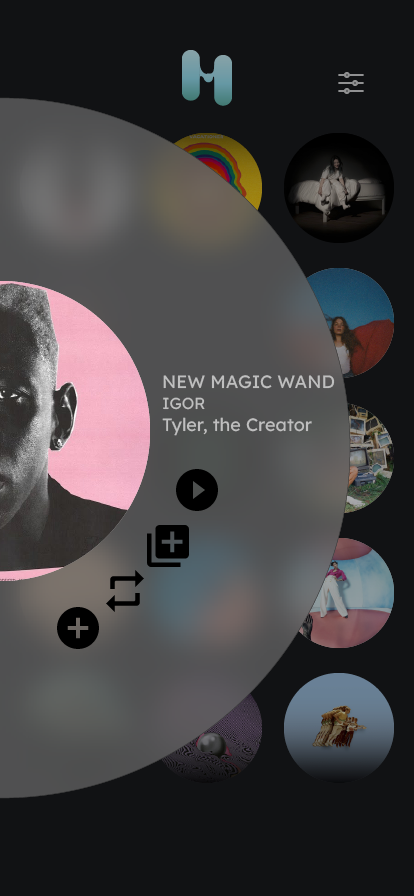

Melo
Melo is a social media platform in which users can share and discuss music.
Code: https://github.com/mintkey/Melo
Why a social media platform?
Other music sharing and playback applications don't provide the ability to discuss music or share your
identity through a medium like music. Soundcloud does have comments, but they're more for the
purpose of giving feedback to the artist sharing music. Spotify has user profiles that show what a user
listens to, but the user is unable to share individual songs or discuss music with their followers.
On the other hand, many people do use Instagram's story feature of sharing x seconds of a song,
or post a screenshot of what they're currently listening to. Regardless of the capability to discuss music,
there's a desire for people to show part of their online identity through the type of music they listen to.
The problem is that it's very easy to simply skip the story entirely or not hear the song because your phone
might be on mute. Plus, music isn't at the forefront of Instagram's shared content.
Okay, so how is Melo a solution?
Melo being a social media platform allows users to share music as they would a post; songs and playlists shared by
users that you follow appear on a feed, which you can listen to by tapping on the shared song/playlist. Not only
would
this show your friends' music interests, you can filter the feed by genre, so you can find and listen to new music
that
is relevant to you.
Any other problems it solves?
Yes! The other primary issue that's solved by Melo is the tedious task of playing back a song that a Spotify user
shares
with an Apple Music user. Currently, if a Spotify subscriber shares a song over text with someone who uses Apple
Music,
the Apple Music user has to search for the song his/herself, which takes time and is relatively inconvenient. By
cross-
searching Apple Music and Spotify API libraries, the app can play the track equivalent in the user's respective
subscribed
library, regardless of whether the song-sharer is subscribed to the same or opposite service.
Design
Old UI
When I used Figma* to design the UI of Melo, the design was relatively basic and minimal, in an effort to imitate
the minimalism of Twitter. However, the result was lackluster and didn't have anything particularly appealing.
*Unfortunately, I lost all of my Figma files when I deleted my old email. The photos below are printouts of the
old UI that I kept in my notebook.
Color palette
#000
#A6A6A6
#FFF
#F72B37

I wanted to make the onboarding process a seamless, undistracting experience,
since there would be a couple of extra steps before completing account creation.
Using a black background, and red as the only highlight color, the user can focus
on completing text fields and proceeding to the next step.

When the user reaches this last step, they pick from a carousel picker
menu of various genres. Selection is shown visually when the user taps on
a genre and the genre text color turns white and its font size becomes enlarged.
The genre that the user chooses becomes their main identifier on their profile,
and later the user would be able to choose up to two more genres to identify with.
This identifier feature would be implemented in the Discover page, where a user
can search for other users by genre.

This is the home page, which presents a feed of what you and your friends are sharing.
The icon in the top right is a filter button, in which the user can filter their feed
by genre. User handles and profile pictures are shown alongside the track or playlist
they share. There is an option to like the shared track/playlist by tapping on a heart
button. The button next to it is a set of options to reshare the song onto the user's
own profile, add the song to the user's Apple Music or Spotify library, or get a link
to the track. The other icons in the bottom tab bar represent "Music Map," "Share Song,"
"Discover," and "Profile." (UIs were not completed for "Music Map," "Share Song," or "Profile.")

This is the Discover page, in which users can search for users, artists, tracks,
albums, and playlists. The filter button at the top right corner has the same
functionality as the home page, in which content can be filtered by genre.
Sections and panels fill the page, taking on a similar format to Apple Music's
"For You" and "Browse" tabs. Content is curated based on what a user has shared
and regularly listens to. Users are also shown as recommendations based on similar
artist or album shares or listens.
New UI
Months later, after having taken a step away from this project due to school reponsibilities, and
especially after having taken a course in Graphic Design, I decided to redesign Melo.
Color palette
 #111214
#111214
#48A18B
#96E4F6
#D5F6FC
Starting with the launch screen, I wanted to convey a fun theme that isn't
often seen in music playback apps or social media platforms. The app's design
theme is supposed to represent uniform lava lamp movement, which is reflected
in the app's "M" logo design as well. I also chose to use a bright-colored
teal gradient color to represent vibrancy, and a dark background, since dark
colors tend to be used more often in music-oriented apps.

Here, the home screen's logo at the top has been updated with a refreshed design,
reflecting the launch screen's graphics. The filter button in the top right remains
the same, along with its function. The feed has been redesigned to show a grid
of circular album covers, with a fade-to-black at the top and bottom to show where
the header at the top and tab bar at the bottom begin and overlap the feed.

If the user taps on one of the album covers in their feed, the album cover will enlarge
and migrate to the left while a larger, translucent gray circle will pop up around it.
The design was made to look like a modern, digital version of a vinyl. Towards the center
of the gray is the track title (emphasized in a larger font size), album, and artist.
The buttons below, which cascade around the album artwork, are the following:
"Play," "Queue," "Reshare," and "Add to library." The buttons are ordered in such a way
that listening to the shared track is emphasized.
The new UI for Melo is incomplete. This page will be regularly updated with new
content.